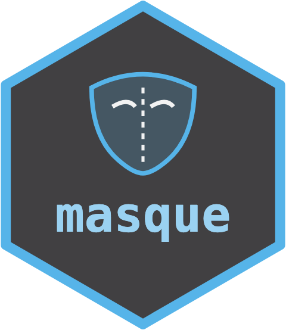

masque: Synthetic Copies of Confidential Data Tables
Source:R/masque-package.R
masque-package.RdCreates a synthetic copy of a confidential data table, so that analysis
code can be written and tested without the real values. By default, every
outcome and covariate is simulated independently, with no link to other
columns or to the real rows. Each numeric column keeps only an
eleven-point summary: its 1st percentile, deciles and 99th percentile.
The experimental design and the pattern of
missing values are kept exactly, and category labels, including those of
the design and the treatments, are replaced by codes. Columns that look
like identifiers or free text are left out. More of the real structure can
be kept on request, at the cost of disclosing more about the real data.
With mode = "local" (for the data owner's own use) or
mode = "collaborate" (for sharing), numeric columns are simulated from a
Gaussian copula, which approximately preserves each column's distribution
and the correlations between them. In those modes, treatment effects can
also be mimicked by setting conditional = TRUE in mask(). A folder of
files or a multi-sheet workbook can be masked together. Keys shared by the
tables get the same codes in every table, so the synthetic tables still
join. Each run also returns a recipe, which maps the codes back to the
real labels. The recipe is as confidential as the data and should stay
with the data owner. apply_recipe() converts the real data into the
names and codes of the copy, so code written on the copy runs on it
unchanged, and unmask() converts results back to the real labels. The
package gives no formal privacy guarantee.
Getting started
masque() is the one-call front door: it reads the input, proposes a
per-column masking plan (a role and an action for each column;
see propose_roles() and set_role()), masks, audits, and optionally
writes the result. A single table flows through mask(); a folder,
workbook, or named list flows through mask_set(), which aliases
shared keys identically across tables so the synthetic set still
joins. apply_recipe() and unmask() re-target a finished pipeline
onto the original data. audit_mask() grades what the clone discloses,
and data_card() describes the clone for a collaborator without
listing any value.
Scope and limits
masque gives no formal privacy guarantee such as differential privacy.
A default copy is drawn from a coarse summary of each column and keeps no
relationship between columns. A local or collaborate copy keeps more of
the real structure, and in collaborate mode no real value appears in it.
See vignette("confidentiality", package = "masque") for the full threat
model and limitations.
Three modes
mode = "null"(default): design and missing-value pattern exact; labels coded; every outcome, covariate and date drawn independently from a coarse summary of its column; ids and free text dropped;audit_mask()auto-runs at construction.mode = "local": owner's realistic dev surrogate; preserves names and level vocabularies; may emit observed values; not for external sharing.mode = "collaborate": opaque aliasing for treatment and categorical-covariate levels; within-resolution jitter on numerics; whole numbers stochastically rounded;audit_mask()auto-runs at construction.
Author
Maintainer: Max Moldovan max.moldovan@gmail.com (ORCID) (affiliation: Adelaide University)
Authors:
Max Moldovan max.moldovan@gmail.com (ORCID) (affiliation: Adelaide University)
Other contributors:
Grains Research and Development Corporation (ROR) (GRDC Project UOA2301-005OPX (AAGI-AU)) [funder, copyright holder]